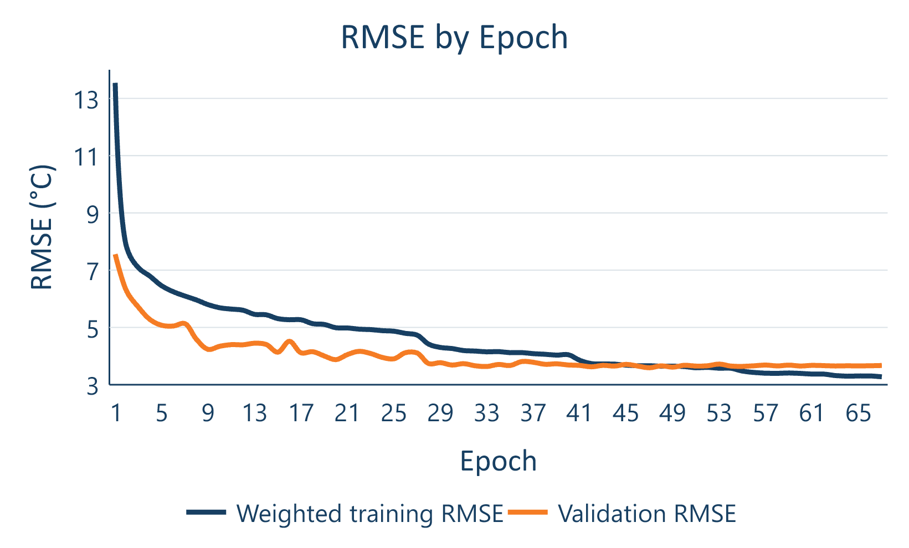
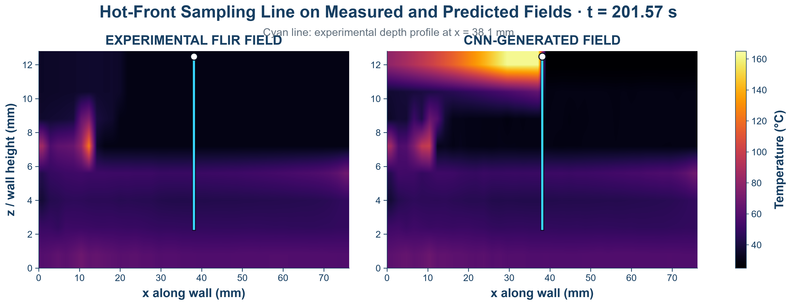

Research / CFIP Laboratory / Summer 2026
3D Printing Thermal Analysis
From thermal-camera measurements to full-field prediction: a residual neural network that models how a printed wall heats, cools, and reheats.

Final results
560 temperatures. One evolving field.
The final residual CNN achieved 3.59°C root mean squared error (RMSE) on a complete printing trial excluded from training. It predicts all 560 locations in a 14 × 40 thermal grid, using 32 recent frames to estimate the next temperature map.
Compared with the earlier 49-region feed-forward model’s approximately 22°C RMSE, the final result represents about 84% lower field error. The project’s thermal simulation ran 8× faster than physical printing.
These are the final presentation’s headline results. The speed comparison is against elapsed printing time; it is not a comparison with a numerical solver.
Experiment to model
Learning the thermal history.
I printed single-wall PLA specimens while a FLIR camera recorded surface temperature, then aligned the thermal fields with printer conditions and deposition timing. Eight complete trials covered multiple print speeds and nozzle temperatures.
The model looks back over 32 frames, learns the temperature change ΔT, and adds that change to the latest field. This residual formulation predicts local heating and cooling across the wall instead of collapsing the process to one average temperature.
The work combined experimental setup, thermal-image registration, data preparation, neural-network training, and spatial error analysis.
Validation
A complete print held out.
Seven trials supplied approximately 39,900 training samples. The complete 40 mm/s, 210°C trial supplied 4,677 validation samples. Holding out an entire trial avoids placing nearly identical neighboring frames in both training and validation.
The best checkpoint was selected at epoch 47. Because this trial was used for checkpoint selection, the result is a validation score; a separate test set and further held-out trials remain future work.

Local fidelity
The difficult region beneath the nozzle.
A low whole-field error can hide a mismatch in the small, rapidly changing hot front. I sampled a vertical line at x = 38.1 mm to compare the measured and reconstructed temperature profiles directly.
The separate physics-informed hot-front reconstruction reached 11.30°C line-profile RMSE, with a predicted peak of 162.05°C versus 161.66°C measured. This augmented reconstruction fills a camera blind spot beneath the nozzle; it is distinct from the direct CNN output behind the 3.59°C field score.

The next step is sharper local temperature profiles, followed by validation on more complete trials and uncertainty estimates.